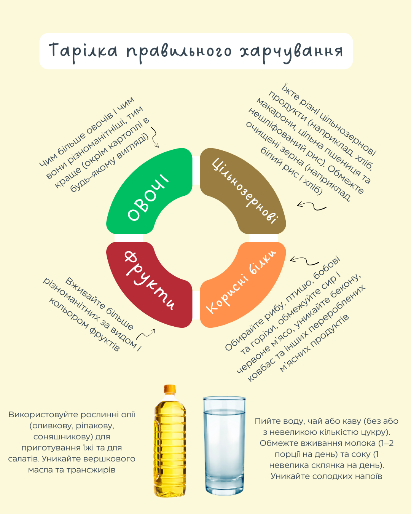

Гарвардська здорова тарілка – це візуальний інструмент, розроблений в Гарвардській школі громадського здоров’я, що демонструє, як має виглядати збалансоване харчування. Не дієта, а такий собі практичний посібник для людей, які хочуть покращити свій раціон і загальний стан здоров'я.
Ваша тарілка повинна 50 на 50 складатися з овочів і фруктів. Важливо забезпечити різноманітність кольорів і видів продуктів. Зверніть увагу, що картопля не вважається овочем за стандартами здорового харчування, адже вона може негативно впливати на рівень цукру в крові.
Заповнюйте ще 1/4 тарілки цільнозерновими продуктами. До них належать цільна пшениця, ячмінь, гречка, кіноа, вівсянка та неочищений рис. Вони більш корисні для рівня цукру в крові, ніж білий хліб чи білий рис.
1/4 Вашого раціону повинна складатись з джерел білка. Риба, курка, бобові та горіхи – це здорові варіанти. Ці продукти чудово поєднуються з овочами і можуть бути додані до салатів.
Вибирайте корисні рослинні олії у помірних кількостях. Віддавайте перевагу оливковій, кукурудзяній, рапсовій, соняшниковій та арахісовій олії, та уникайте частково гідрогенізованих олій, які містять шкідливі трансжири. Пам'ятайте, що зменшена жирність не завжди означає корисність.
Пийте воду, чай або каву. Уникайте солодких напоїв, обмежте вживання молочних продуктів до однієї-двох порцій на день і зменшуйте кількість соку до маленького стакана.